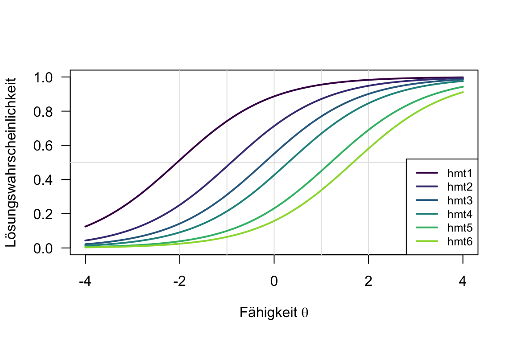
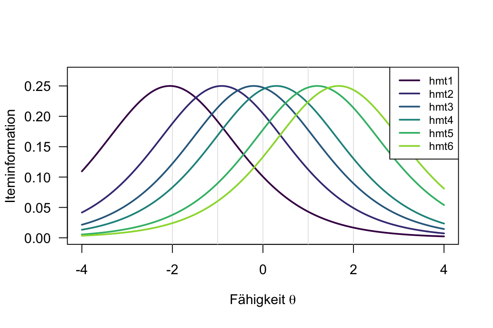
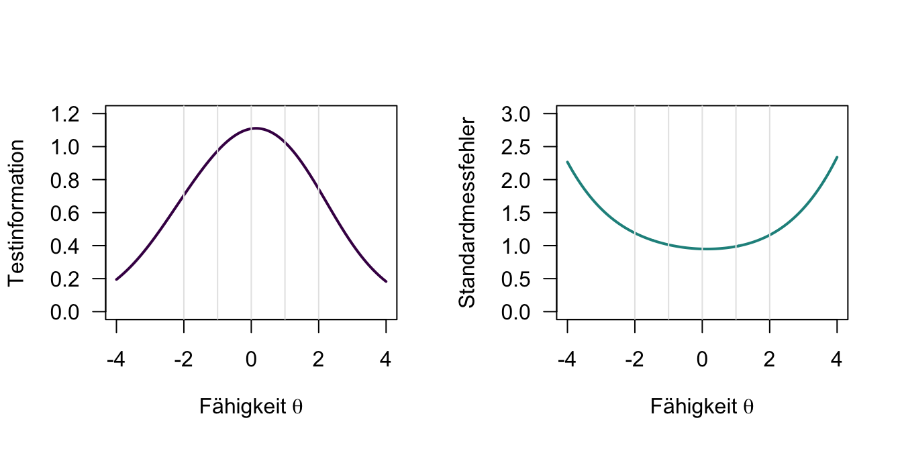
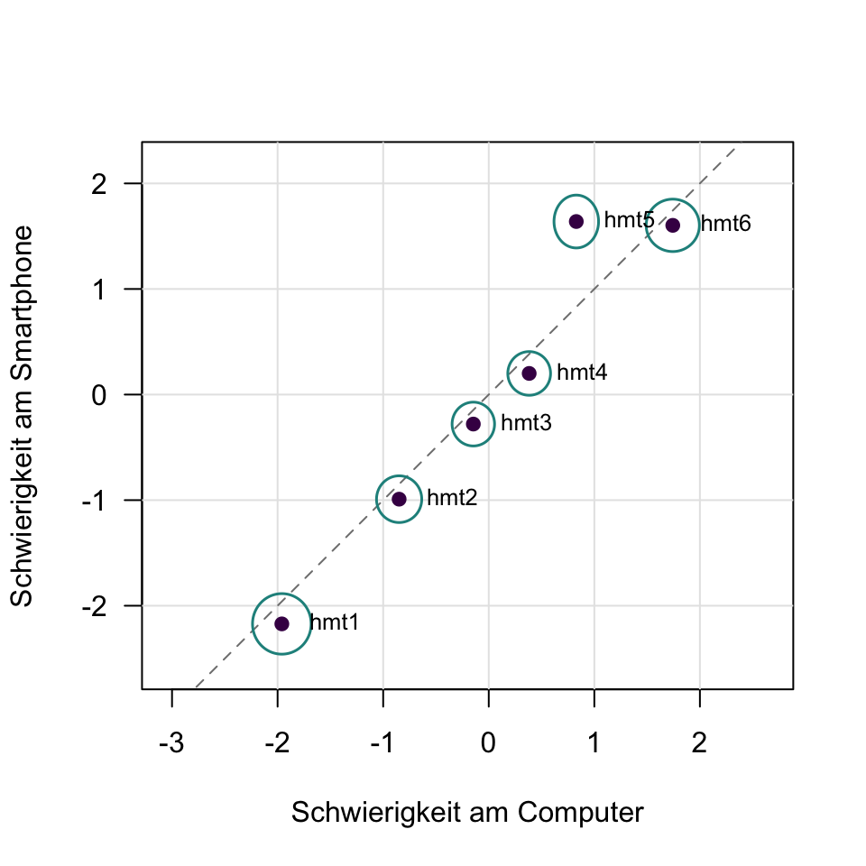

round(colMeans(hmt_short[, -1]), 2)hmt1 hmt2 hmt3 hmt4 hmt5 hmt6
0.86 0.69 0.55 0.44 0.27 0.20 Dieses Kapitel wird derzeit intern überarbeitet. Aufgaben, Daten und Lösungen können sich noch ändern. Bitte bearbeiten Sie die Aufgaben erst, wenn die Überarbeitung abgeschlossen ist und dieser Hinweis entfernt wurde.
Der Hagen Matrices Test (HMT, Heydasch, 2014) misst fluide Intelligenz, genauer das schlussfolgernde Denken. Seine Aufgaben sind figurale Matrizen: Die Person muss die Regel erkennen, nach der die Figuren angeordnet sind, und mit ihr das fehlende Element ergänzen. Der HMT wird online bearbeitet. Die Langform hat 20 Aufgaben und dauert 20 Minuten, die Kurzform HMT-S sechs Aufgaben und dauert 5 Minuten (Heydasch et al., 2013). Für nichtkommerzielle Zwecke ist er frei verfügbar.
Die Studienberatung der RPTU plant ein Online-Self-Assessment für Studieninteressierte. Es soll ihnen unter anderem zurückmelden, wie gut sie im schlussfolgernden Denken abschneiden, und dafür den HMT-S nutzen. Viele Interessierte bearbeiten solche Angebote am Smartphone. Deshalb erprobt die Studienberatung den HMT-S mit 800 Personen: 400 bearbeiten ihn am Computer, 400 am Smartphone. Mit dem Rasch-Modell prüft sie, ob die sechs Aufgaben für das Self-Assessment taugen.
Die Daten sind simuliert und sagen nichts über den echten HMT-S aus. Sie stehen im Paket irtea als Datensatz hmt_short bereit: Die Spalte device enthält das Endgerät, die Spalten hmt1 bis hmt6 die Antworten (1 = gelöst, 0 = nicht gelöst).
Aufgabe 1 (Lösungshäufigkeiten) Die Studienberatung berechnet zuerst, welcher Anteil der Personen jede Aufgabe gelöst hat.
Am leichtesten ist hmt1 (86 % gelöst), am schwersten hmt6 (20 % gelöst).
Dem Schwierigkeitsindex \(P_j\) (mal 100): Er reicht hier von 86 (hmt1) bis 20 (hmt6).
Aufgabe 2 (Das Rasch-Modell) Die Studienberatung schätzt das Rasch-Modell mit dem Paket eRm (Mair & Hatzinger, 2007).
difficulty se
hmt1 -2.06 0.10
hmt2 -0.91 0.08
hmt3 -0.20 0.07
hmt4 0.30 0.07
hmt5 1.20 0.08
hmt6 1.67 0.09\[ P(u_{ij} = 1 \mid \theta_i, \beta_j) = \frac{e^{\theta_i - \beta_j}}{1 + e^{\theta_i - \beta_j}} \]
difficulty enthält die Itemschwierigkeiten \(\beta_j\), se ihre Standardfehler.
hmt1 (−2.06) < hmt2 < hmt3 < hmt4 < hmt5 < hmt6 (1.67). Die Reihenfolge stimmt mit den Lösungshäufigkeiten überein: Je seltener eine Aufgabe gelöst wird, desto höher ist ihre Schwierigkeit.
Eine Person mit der Fähigkeit \(\theta = -0.20\) löst Aufgabe 3 mit einer Wahrscheinlichkeit von 0.50.
Die Skala von \(\theta\) und \(\beta\) hat keinen natürlichen Nullpunkt. eRm legt ihn so fest, dass die Summe der Itemschwierigkeiten 0 ist (Summennormierung).
Aufgabe 3 (Itemcharakteristische Kurven)
Die Formel steht im Hinweis zu Aufgabe 2. Für \(\theta = -2\): \(e^{-2 - (-0.20)} = e^{-1.80}\).
| \(\theta\) | −2 | −1 | 0 | 1 | 2 |
|---|---|---|---|---|---|
| \(P(u_{i3} = 1)\) | 0.14 | 0.31 | 0.55 | 0.77 | 0.90 |

Die dritte Kurve von links: Sie schneidet die Linie 0.5 bei \(\theta = -0.20\) und verläuft durch die Werte aus Teil a.
Im Rasch-Modell unterscheiden sich die Aufgaben nur in ihrer Schwierigkeit; alle haben dieselbe Steigung (Itemdiskrimination). Die Kurven sind deshalb nur nach rechts oder links verschoben.
Aufgabe 4 (Iteminformation)
\[ I_j = p(u_{ij} = 1) \cdot \left(1 - p(u_{ij} = 1)\right) \]
| \(\theta\) | −2 | −1 | 0 | 1 | 2 |
|---|---|---|---|---|---|
| \(I_3\) | 0.12 | 0.21 | 0.25 | 0.18 | 0.09 |

Bei \(\theta = \beta_j\): Dort ist die Lösungswahrscheinlichkeit 0.50 und die Iteminformation mit \(0.50 \cdot 0.50 = 0.25\) am größten.
hmt5 (\(\beta_5 = 1.20\), Information 0.25), weil ihre Schwierigkeit am nächsten bei \(\theta = 1\) liegt.
Aufgabe 5 (Testinformation und Standardmessfehler) Die Tabelle zeigt die Iteminformation der sechs Aufgaben für fünf Fähigkeitswerte. Die Spalte von Aufgabe 3 haben Sie in Aufgabe 4 berechnet.
| \(\theta\) | hmt1 |
hmt2 |
hmt3 |
hmt4 |
hmt5 |
hmt6 |
|---|---|---|---|---|---|---|
| −2 | 0.25 | 0.19 | ? | 0.08 | 0.04 | 0.02 |
| −1 | 0.19 | 0.25 | ? | 0.17 | 0.09 | 0.06 |
| 0 | 0.10 | 0.20 | ? | 0.24 | 0.18 | 0.13 |
| 1 | 0.04 | 0.11 | ? | 0.22 | 0.25 | 0.22 |
| 2 | 0.02 | 0.05 | ? | 0.13 | 0.21 | 0.24 |
\[ I(\theta_i) = \sum_{j=1}^{m} I_j(\theta_i), \qquad s_e(\theta) = \frac{1}{\sqrt{I(\theta)}} \]
| \(\theta\) | −2 | −1 | 0 | 1 | 2 |
|---|---|---|---|---|---|
| \(I(\theta)\) | 0.70 | 0.97 | 1.10 | 1.02 | 0.74 |
| \(\theta\) | −2 | −1 | 0 | 1 | 2 |
|---|---|---|---|---|---|
| \(s_e(\theta)\) | 1.20 | 1.02 | 0.95 | 0.99 | 1.16 |

Am genauesten knapp über \(\theta = 0\), wo die meisten Aufgaben ihre Information haben; zu den Rändern hin wird der Standardmessfehler rasch größer. Insgesamt misst der Test ungenau: Selbst im besten Fall ist \(s_e(\theta)\) fast 1, also eine ganze Standardabweichung der Fähigkeit.
Aufgabe 6 (Rückmeldung im Self-Assessment) Lea ist 18 und interessiert sich für ein Psychologiestudium. Im Self-Assessment löst sie vier der sechs Aufgaben. Im Rasch-Modell erhalten alle Personen mit demselben Summenwert denselben Personenparameter:
Person Parameters:
Raw Score Estimate Std.Error
0 -3.33540154 NA
1 -2.09124281 1.2147816
2 -0.90777987 1.0030640
3 0.03045129 0.9495153
4 0.94923746 0.9828573
5 2.06975607 1.1795177
6 3.24131996 NAWer keine oder alle Aufgaben löst, hat keinen endlichen Personenparameter. eRm schätzt ihn für die Summenwerte 0 und 6 durch Extrapolation; deshalb fehlt dort der Standardfehler (NA).
\(\hat{\theta} = 0.95\), Standardmessfehler 0.98. Das passt zu \(s_e(1) = 0.99\) aus Aufgabe 5, denn Leas Personenparameter liegt nahe bei 1.
\([-0.98, 2.88]\)
Nur sehr wenig: Das Intervall reicht vom unterdurchschnittlichen bis in den weit überdurchschnittlichen Bereich. Mit sechs Aufgaben misst der HMT-S für eine Rückmeldung an einzelne Personen zu ungenau; er eignet sich eher für Aussagen über Gruppen. Für eine individuelle Rückmeldung bräuchte das Self-Assessment mehr Aufgaben, etwa die Langform.
Aufgabe 7 (Wald-Test) Die Studienberatung prüft, ob die Aufgaben am Smartphone genauso schwer sind wie am Computer. Dazu schätzt sie das Rasch-Modell getrennt in beiden Gruppen.
device <- factor(hmt_short$device)
wald <- Waldtest(model, splitcr = device)
# Schwierigkeiten (beta) und ihre Varianzen (var) je Gruppe:
# 1 = Computer, 2 = Smartphone
round(data.frame(
beta_1 = -wald$betapar1, var_1 = wald$se.beta1^2,
beta_2 = -wald$betapar2, var_2 = wald$se.beta2^2,
row.names = names(items)
), 3) beta_1 var_1 beta_2 var_2
hmt1 -1.960 0.020 -2.172 0.021
hmt2 -0.849 0.012 -0.991 0.013
hmt3 -0.146 0.011 -0.279 0.011
hmt4 0.383 0.011 0.200 0.011
hmt5 0.829 0.012 1.639 0.016
hmt6 1.743 0.017 1.603 0.016\[ W_j = \frac{(\beta_{j,1} - \beta_{j,2})^2}{\sigma^2_{j,1} + \sigma^2_{j,2}}, \qquad T = \operatorname{sign}(\beta_{j,1} - \beta_{j,2}) \cdot \sqrt{W_j} \]
\(T\) folgt einer Standardnormalverteilung.
Aufgabe 2: \(W_2 = 0.81\), \(T = 0.90\). Aufgabe 5: \(W_5 = 23.43\), \(T = -4.84\).
Wald test on item level (z-values):
z-statistic p-value
beta hmt1 -1.042 0.297
beta hmt2 -0.903 0.367
beta hmt3 -0.903 0.366
beta hmt4 -1.237 0.216
beta hmt5 4.850 0.000
beta hmt6 -0.777 0.437eRm rechnet mit Leichtigkeitsparametern. Die z-statistic hat deshalb den gleichen Betrag wie \(T\), aber das umgekehrte Vorzeichen.
Nur hmt5: \(|T| = 4.84 > 1.96\) (\(p < 0.001\)). Die Aufgabe ist am Smartphone schwerer (\(\beta_{5,2} = 1.64\)) als am Computer (\(\beta_{5,1} = 0.83\)). Bei allen anderen Aufgaben ist \(|T| < 1.96\).
Die Aufgabe könnte feine Details enthalten, die auf dem kleinen Bildschirm eines Smartphones schwer zu erkennen sind. An der Fähigkeit liegt es nicht: Die übrigen Aufgaben sind in beiden Gruppen etwa gleich schwer.
Aufgabe 8 (Grafischer Modelltest) Die Abbildung stellt die Itemschwierigkeiten am Computer und am Smartphone aus Aufgabe 7 gegenüber. Die Ellipsen zeigen für jede Aufgabe ein Konfidenzintervall in beide Richtungen (Konfidenzkoeffizient 95 %).

hmt5: Ihre Ellipse liegt deutlich oberhalb der Diagonalen, die Aufgabe ist also am Smartphone schwerer. Die Ellipsen aller anderen Aufgaben berühren die Diagonale. Das stimmt mit dem Wald-Test überein.
Denken Sie an Teil c von Aufgabe 2.
An der Summennormierung: In jeder Gruppe summieren sich die Schwierigkeiten zu 0. Weil hmt5 am Smartphone schwerer ist, müssen die übrigen Aufgaben dort etwas leichter erscheinen.
Aufgabe 9 (Itemselektion) Die Studienberatung fasst die Ergebnisse aus diesem Kapitel zusammen. Das Self-Assessment richtet sich an Studieninteressierte, die im schlussfolgernden Denken meist durchschnittlich bis überdurchschnittlich abschneiden.
Die Vorlesung nennt für die Itemselektion unter anderem: Die Iteminformation soll zur Zielgruppe passen, und die Itemparameter sollen zwischen Gruppen invariant sein (Itemfit). Inhaltliche Überlegungen spielen ebenfalls eine Rolle.
hmt5 überarbeiten, etwa mit größeren, klareren Figuren, oder nur am Computer vorgeben. Ohne Überarbeitung streichen: Sie misst am Smartphone nicht dasselbe wie am Computer, obwohl sie für die Zielgruppe viel Information liefert.hmt1 ist sehr leicht und liefert für die Zielgruppe kaum Information (0.04 bei \(\theta = 1\)). Sie ließe sich durch eine schwerere Aufgabe ersetzen; als leichte Einstiegsaufgabe kann sie aber sinnvoll sein.hmt2, hmt3, hmt4 und hmt6 passen zum Modell und decken den mittleren bis oberen Bereich ab: behalten.Mit nur vier Aufgaben sänke die ohnehin geringe Testinformation weiter, und der Standardmessfehler würde noch größer. Besser ist es, die Aufgaben zu überarbeiten oder zu ersetzen und den überarbeiteten Test erneut an einer neuen Stichprobe zu erproben.